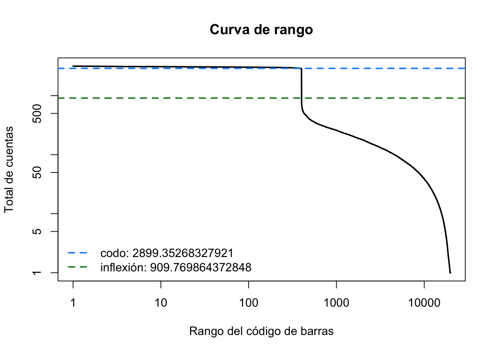

ruta_datos <- "" # <- pega aquí la ruta que está en el chatPráctica de la sesión 04
Jueves 27 de agosto de 2026 · los tres objetos, gotas vacías y RNA ambiental
Objetivo
Manejar el objeto de datos de célula única, decidir qué gotas contienen célula con un criterio estadístico y no con un umbral, y medir cuánto RNA ambiental se coló en ellas.
La práctica va en cuatro partes y se corren en orden: cada una deja algo que la siguiente usa.
| Parte | Qué se hace |
|---|---|
| 1 | El mismo dato en SingleCellExperiment, Seurat y AnnData |
| 2 | Qué gotas tienen célula: curva de rango y emptyDrops |
| 3 | Cuánto ambiente entró, y qué le hace descontaminar |
| 4 | Unir muestras sin perder células por el camino |
NotaCosto de esta práctica
Unos 55 minutos · menos de 8 GB de RAM. El paso que manda es emptyDrops de la parte 2. Si tarda mucho más, avisa antes de esperar media hora.
Antes de empezar: conectarse a ken y cargar el entorno
Todo esto se hace en la terminal, antes de abrir R. Son cuatro pasos y hay que repetirlos cada vez que abras una terminal nueva: lo que cargan vive en la sesión, no en el disco.
1. Entrar al clúster
ssh TUUSUARIO@ken.lavis.unam.mx2. Cargar el entorno del curso
source /mnt/data/bioinfo3/compartido/setup-curso.shsource ejecuta el guion dentro de tu sesión, no en una aparte, y por eso lo que define se queda contigo. Deja listos los módulos de R y de Python, Cell Ranger en el PATH, y los atajos $REFERENCIA y $DATOS.
3. Cargar el compilador — este paso va DESPUÉS, y no es opcional
module load gcc/14.2.0
ImportantePor qué después, y por qué falla si lo olvidas
El libstdc++ que trae anaconda se antepone al del sistema y no incluye el GLIBCXX_3.4.32 que exige Rcpp. Como casi todo el ecosistema de R depende de Rcpp, sin esta línea se caen Seurat, SingleCellExperiment, DropletUtils, scater y SoupX de golpe.
El error se ve así, y no menciona a gcc por ningún lado:
Error: package or namespace load failed for 'SingleCellExperiment':
unable to load shared object '.../Rcpp/libs/Rcpp.so':
.../libstdc++.so.6: version `GLIBCXX_3.4.32' not foundSi lo cargas antes del source, anaconda vuelve a ganarle y el problema reaparece. El orden importa: primero setup-curso.sh, después gcc.
4. Comprobar que quedó, antes de perder tiempo
Rscript -e 'library(Rcpp); cat("entorno OK\n")'Si responde entorno OK, ya puedes abrir R y seguir con la práctica. Si no, repite el paso 3 antes de continuar: nada de lo que viene va a funcionar.
AdvertenciaDos cosas que no se hacen en el nodo de acceso
ken es la máquina a la que entras por SSH, y sus 4 núcleos y 15 GB los comparten todas las personas conectadas a la vez.
- Nada de cómputo pesado ahí. Para eso está la cola, con
srunosbatch. - No ejecutes a mano el bloque de
zellkonverterque aparece más abajo en esta práctica. Está marcado para no ejecutarse porque dispara la compilación de un Python entero desde el código fuente, en este nodo. Con diez personas haciéndolo a la vez, el nodo queda inservible para el grupo.
De dónde sale el objeto que vas a usar
No empiezas desde cero: empiezas desde un objeto que ya existe en el clúster. Eso no es un atajo, es lo normal — casi ningún análisis arranca en los FASTQ. Pero usar algo sin saber cómo se hizo sí es un problema, así que aquí está la cadena completa, desde el experimento hasta el archivo que vas a leer.
Los cuatro pasos ya están hechos. Tú entras en el quinto.
Paso 1 · Los FASTQ (antes del curso)
PBMC de donante sano, 10x Genomics 3’ Next GEM. Los archivos viven en /mnt/data/bioinfo3/compartido/10x/datasets/, con su PROCEDENCIA.md y sus CHECKSUMS.md5. Son los mismos que inspeccionaste en la práctica de la sesión 03.
Paso 2 · Cell Ranger (sesión 03)
Es lo que enviaste a la cola el martes con sbatch. Convierte los FASTQ en una matriz de cuentas: alinea contra la referencia GRCh38-2024-A, asigna cada lectura a una célula por su código de barras y a una molécula por su UMI.
NotaLo que corrí yo — no lo ejecutes
Se corrió una vez, en la cola, para todo el grupo. Tarda horas y ocupa un nodo entero: por eso lo lees, no lo repites.
cellranger count \
--id=pbmc_5k \
--transcriptome=$REFERENCIA \
--fastqs=$DATOS \
--create-bam=falseTrabajos cuant-2299 y cuant-2300 del clúster. La salida quedó en /mnt/data/bioinfo3/compartido/10x/pbmc_5k/outs/.
Paso 3 · Qué hay dentro de outs/
Esta es la carpeta que abrimos juntas al principio de la sesión. Míralas, porque la práctica entera trata de la diferencia entre las dos primeras:
raw_feature_bc_matrix/ TODOS los códigos de barras posibles
filtered_feature_bc_matrix/ solo los que Cell Ranger cree que son células
metrics_summary.csv las cifras de la corrida
web_summary.html el informe visualLa raw tiene 1 086 446 códigos de barras y la filtered unos pocos miles. La inmensa mayoría de las gotas no llevaba célula. Eso no es un defecto del experimento: es cómo funciona la microfluídica, y la parte 2 de esta práctica va justo de cómo se decide cuál es cuál.
Paso 4 · De la carpeta al objeto de R
Una carpeta de Cell Ranger no es un objeto de R: hay que leerla. Lo hice una vez para el grupo, para que once personas no lean once veces el mismo directorio de un millón de entradas en el nodo de acceso.
NotaLo que corrí yo — no lo ejecutes
library(SingleCellExperiment)
library(DropletUtils)
sce <- read10xCounts(
"/mnt/data/bioinfo3/compartido/10x/pbmc_5k/outs/raw_feature_bc_matrix"
)
stopifnot(ncol(sce) == 1086446, nrow(sce) == 38606)
saveRDS(sce, "pbmc5k-raw-sce.rds")Tardó 0.3 minutos y produjo un archivo de 50 578 019 bytes, con R 4.6.0 y DropletUtils 1.32.0 — las mismas versiones que declara el renv.lock del curso.
El stopifnot no es adorno: verifica antes de escribir. La primera vez que generé este archivo, un guion mío guardó primero y comprobó después, y dejó en el disco un objeto con una columna mal construida. El orden correcto es comprobar, luego guardar.
Su procedencia completa está junto al archivo, en PROCEDENCIA.md, con la fecha, la máquina, las versiones y el CHECKSUMS.md5 para verificar que no se corrompió.
Paso 5 · Aquí entras tú
Lees ese objeto. Es la matriz cruda, con el millón de códigos de barras — no la filtrada — porque la parte 2 necesita las gotas vacías para estimar el perfil del ambiente. Si te diera la filtrada, emptyDrops no tendría con qué comparar.
La ruta
Todas las rutas se declaran aquí y en ningún otro lugar de la práctica.
La ruta del objeto se pega en clase. Está en el chat de Zoom: cópiala entre las comillas de abajo. Se reparte así, y no viene ya escrita, porque este documento se publica y la ruta apunta a un directorio del clúster que solo tiene sentido dentro de ken.
Comprueba antes de seguir. Todo lo que viene depende de esta línea.
if (!nzchar(ruta_datos)) {
cat("Sin ruta: la practica va a usar el objeto SINTETICO de respaldo.\n",
"Sirve para aprender el manejo de los objetos, pero las cifras no son\n",
"las del experimento. Pega la ruta del chat para trabajar con los datos.\n")
} else if (file.exists(ruta_datos)) {
cat("Listo: el objeto existe y se puede leer.\n")
} else {
cat("La ruta esta escrita pero NO existe. Revisa que este completa y\n",
"que estes dentro de ken. Avisa en el chat antes de seguir.\n")
}Sin ruta: la practica va a usar el objeto SINTETICO de respaldo.
Sirve para aprender el manejo de los objetos, pero las cifras no son
las del experimento. Pega la ruta del chat para trabajar con los datos.
NotaSi ves el mensaje del objeto sintético
No es un error. Es lo que verás en la versión publicada de esta práctica, porque se renderiza fuera del clúster, donde esa ruta no existe. En tu sesión de ken, con la ruta pegada, el mensaje será otro y las cifras serán las reales.
library(SingleCellExperiment)
library(Seurat)
library(Matrix)
library(DropletUtils)
library(SoupX)Parte 1 · El mismo dato en tres objetos
Cargar el objeto
Dos cosas pasan aquí que conviene entender, porque ninguna es obvia.
Se toma una muestra de 5 000 códigos de barras. El objeto completo tiene 1 086 446, y en esta parte lo vamos a convertir a Seurat y a AnnData tres veces. Hacer eso con el objeto entero, once personas a la vez, en un nodo de 4 núcleos y 15 GB compartidos, deja la máquina inservible para el grupo. La parte 1 pregunta si las conversiones conservan la información, y eso se contesta igual de bien con 5 000 columnas que con un millón. La parte 2, que sí necesita el millón completo, vuelve a leer el objeto entero.
Se añaden lote y donante. Cell Ranger no los produce: su colData trae solo Sample y Barcode. Los inventamos aquí — son etiquetas sintéticas sobre cuentas reales, no información del experimento. Sin ellas, la tercera pregunta de esta parte —«¿sobrevivieron los metadatos?»— daría FALSE siempre, y la conclusión sería que la conversión los pierde. Sería falso: no habría metadatos que perder. Un experimento que no puede fallar no prueba nada.
set.seed(20260827)
if (nzchar(ruta_datos) && file.exists(ruta_datos)) {
completo <- readRDS(ruta_datos)
# Muestra de 5 000 columnas. La semilla de arriba hace que a todas nos toquen
# las mismas, así que las cifras del grupo son comparables.
sce <- completo[, sort(sample(ncol(completo), 5000))]
rm(completo)
# Metadatos SINTETICOS. No vienen del experimento: existen para que la
# tercera pregunta pueda contestarse.
sce$lote <- rep(c("A", "B"), length.out = ncol(sce))
sce$donante <- rep(c("D1", "D2", "D3", "D4"), length.out = ncol(sce))
rowData(sce)$simbolo <- rownames(sce)
origen <- "objeto de clase (muestra de 5 000 gotas, con lote sintetico)"
} else {
n_genes <- 800; n_celulas <- 400
cuentas <- matrix(
rpois(n_genes * n_celulas,
outer(rgamma(n_genes, 0.4, 2), rgamma(n_celulas, 5, 5))),
nrow = n_genes,
dimnames = list(paste0("Gen", seq_len(n_genes)),
paste0("Celula", seq_len(n_celulas)))
)
sce <- SingleCellExperiment(list(counts = as(cuentas, "dgCMatrix")))
sce$lote <- rep(c("A", "B"), length.out = n_celulas)
sce$donante <- rep(c("D1", "D2", "D3", "D4"), length.out = n_celulas)
rowData(sce)$simbolo <- rownames(sce)
origen <- "objeto SINTETICO de respaldo"
}
cat("Trabajando con el", origen, "\n")Trabajando con el objeto SINTETICO de respaldo
Advertencia
Si es el sintético: sirve para practicar el manejo de los objetos, no para conclusiones biológicas.
Desarrollo
1. Las tres preguntas
Toda la práctica consiste en responder lo mismo en los tres objetos:
- ¿Cuántos genes y cuántas células hay?
- ¿Cuál es la suma total de cuentas?
- ¿Sobrevivieron los metadatos de lote?
No son preguntas interesantes por sí mismas. Son interesantes porque si una conversión sale mal, alguna de las tres cambia — y son las tres que hay que verificar cada vez que se convierte algo.
# Una sola función, para que la comparación sea de verdad la misma pregunta.
verificar <- function(nombre, genes, celulas, suma, tiene_lote) {
data.frame(objeto = nombre, genes = genes, celulas = celulas,
suma = suma, lote = tiene_lote)
}2. En SingleCellExperiment
sceclass: SingleCellExperiment
dim: 800 400
metadata(0):
assays(1): counts
rownames(800): Gen1 Gen2 ... Gen799 Gen800
rowData names(1): simbolo
colnames(400): Celula1 Celula2 ... Celula399 Celula400
colData names(2): lote donante
reducedDimNames(0):
mainExpName: NULL
altExpNames(0):resultados <- verificar(
"SingleCellExperiment",
nrow(sce), ncol(sce),
sum(counts(sce)),
"lote" %in% colnames(colData(sce))
)
resultados objeto genes celulas suma lote
1 SingleCellExperiment 800 400 61056 TRUEDónde vive cada cosa:
| Ranura | Qué guarda | Orientación |
|---|---|---|
assays |
las matrices: counts, logcounts |
genes × células |
rowData |
metadatos de genes | una fila por gen |
colData |
metadatos de células | una fila por célula |
reducedDims |
PCA, UMAP | células × dimensiones |
Nota
nrow() son genes y ncol() son células. Al revés de casi cualquier otra tabla que hayas manejado, donde las filas son observaciones.
3. En Seurat
srt <- as.Seurat(sce, counts = "counts", data = NULL)
resultados <- rbind(resultados, verificar(
"Seurat",
nrow(srt), ncol(srt),
sum(SeuratObject::LayerData(srt, "counts")),
"lote" %in% colnames(srt@meta.data)
))
resultados objeto genes celulas suma lote
1 SingleCellExperiment 800 400 61056 TRUE
2 Seurat 800 400 61056 TRUESeurat guarda lo mismo con otros nombres:
| SingleCellExperiment | Seurat | |
|---|---|---|
| Cuentas | counts(sce) |
LayerData(srt, "counts") |
| Metadatos de célula | colData(sce) |
srt@meta.data |
| Reducciones | reducedDims(sce) |
srt@reductions |
| Orientación | genes × células | genes × células |
colnames(srt@meta.data)[1] "orig.ident" "nCount_originalexp" "nFeature_originalexp"
[4] "lote" "donante"
Nota
Aparecen columnas que no estaban: nCount_ y nFeature_. Seurat las calcula al construir el objeto. No es un error — pero si comparas colData con meta.data esperando que sean idénticos, ahí está la diferencia.
4. La vuelta, que es donde se pierden cosas
de_vuelta <- as.SingleCellExperiment(srt)
resultados <- rbind(resultados, verificar(
"SCE (de vuelta)",
nrow(de_vuelta), ncol(de_vuelta),
sum(counts(de_vuelta)),
"lote" %in% colnames(colData(de_vuelta))
))
resultados objeto genes celulas suma lote
1 SingleCellExperiment 800 400 61056 TRUE
2 Seurat 800 400 61056 TRUE
3 SCE (de vuelta) 800 400 61056 TRUELas tres preguntas dan lo mismo. Pero eso no significa que no se haya perdido nada:
cat("rowData original: ", ncol(rowData(sce)), "columna(s):",
paste(colnames(rowData(sce)), collapse = ", "), "\n")rowData original: 1 columna(s): simbolo cat("rowData de vuelta:", ncol(rowData(de_vuelta)), "columna(s)\n")rowData de vuelta: 0 columna(s)
ImportanteLo que las tres preguntas no detectan
Los metadatos de gen desaparecen en la ida y vuelta, sin ningún aviso. Si rowData tenía símbolos, identificadores de Ensembl o la marca de qué genes son mitocondriales, hay que volver a ponerlos.
Ninguna conversión avisa de lo que tira. Por eso se verifica después, no se confía en que fue bien.
5. AnnData y la trampa de la orientación
AnnData vive en Python y está transpuesto respecto de los otros dos: células × genes.
library(zellkonverter)
# De SCE a .h5ad, que es el formato que lee Python
writeH5AD(sce, "objeto.h5ad", X_name = "counts")
# Y de vuelta
recuperado <- readH5AD("objeto.h5ad")
dim(recuperado)
Advertencia
zellkonverter transpone automáticamente al escribir y al leer, así que las dimensiones vuelven en el orden de R. Es cómodo, y por eso mismo hay que recordar que en el archivo .h5ad están al revés: si abres ese mismo archivo desde Python con scanpy, adata.shape va a dar (células, genes).
Por qué importa, con el error concreto:
| Si conviertes bien | Si olvidas transponer | |
|---|---|---|
| Forma en AnnData | (400 células, 800 genes) | (800 «células», 400 «genes») |
| ¿Da error? | — | No |
| Qué pasa después | todo normal | filtras genes creyendo que filtras células |
Importante
Ése es el punto: no falla, miente. El objeto se construye, el análisis corre, y las figuras salen. Solo que describen otra cosa.
La verificación es una línea: dim() antes y después. Si los dos números se intercambiaron y no era lo que esperabas, párate ahí.
6. Seurat v4 contra Seurat v5
Un .rds de un colaborador puede venir de la versión anterior:
# Si el objeto viene de Seurat v4
objeto <- UpdateSeuratObject(objeto)
# Y después comprobar dónde quedaron las capas
Layers(objeto[["RNA"]])
Advertencia
Abrir un objeto v4 con v5 sin actualizarlo da errores incomprensibles o, peor, comportamiento silenciosamente distinto. UpdateSeuratObject() primero, revisar las capas después.
Parte 2 · Qué gotas tienen célula
Si no tienes todavía la matriz cruda
emptyDrops necesita la matriz raw: las gotas vacías son su grupo de comparación. Si solo tienes filtered, esta práctica no se puede hacer con tus datos — usa el objeto de respaldo.
set.seed(20260827)
if (nzchar(ruta_datos) && file.exists(ruta_datos)) {
sce <- readRDS(ruta_datos)
origen <- "matriz raw de clase"
verdad <- NULL
} else {
n_genes <- 2000
n_grandes <- 400; n_pequenas <- 150; n_vacias <- 20000
# Perfil del ambiente: el RNA que flota en el medio.
perfil_ambiente <- rgamma(n_genes, shape = 0.3, rate = 1)
perfil_ambiente <- perfil_ambiente / sum(perfil_ambiente)
# Perfil celular: igual al ambiente salvo en 300 genes.
marcadores <- sample(seq_len(n_genes), 300)
perfil_celula <- perfil_ambiente
perfil_celula[marcadores] <- perfil_celula[marcadores] * 20
perfil_celula <- perfil_celula / sum(perfil_celula)
gen_col <- function(perfil, totales) {
vapply(totales, function(tt) rmultinom(1, max(tt, 1), perfil)[, 1],
numeric(n_genes))
}
# Los totales de las gotas vacías tienen cola pesada: las más cargadas
# alcanzan a las células pequeñas. Ese traslape es el punto de la práctica.
cuentas <- cbind(
gen_col(perfil_celula, rpois(n_grandes, 3000)),
gen_col(perfil_celula, rnbinom(n_pequenas, mu = 180, size = 6)),
gen_col(perfil_ambiente, rnbinom(n_vacias, mu = 60, size = 0.7))
)
rownames(cuentas) <- sprintf("Gen%04d", seq_len(n_genes))
colnames(cuentas) <- sprintf("BC%05d", seq_len(ncol(cuentas)))
verdad <- rep(c("celula_grande", "celula_pequena", "vacia"),
c(n_grandes, n_pequenas, n_vacias))
orden <- sample(ncol(cuentas)) # en datos reales el orden no dice nada
sce <- SingleCellExperiment(list(counts = as(cuentas[, orden], "dgCMatrix")))
verdad <- verdad[orden]
sce$verdad <- verdad
origen <- "objeto SINTETICO de respaldo"
}
cat("Trabajando con el", origen, "-", ncol(sce), "codigos de barras\n")Trabajando con el objeto SINTETICO de respaldo - 20550 codigos de barras
Advertencia
El sintético tiene una ventaja que los datos reales no tienen: sabemos cuál gota era célula de verdad. Sirve para medir el acierto de cada criterio; no para conclusiones biológicas.
Desarrollo
El error, primero: emptyDrops sobre la matriz filtrada
Antes de hacerlo bien conviene ver qué pasa si se hace mal, porque es el error más común de la sesión.
filtered no es otro archivo: es la misma matriz a la que ya le quitaron las gotas vacías. Aquí se simula quedándose con los códigos de más cuentas, que es lo que hace el programa comercial.
totales <- colSums(counts(sce))
filtrada <- sce[, order(totales, decreasing = TRUE)[1:550]]
cat("Codigos en la matriz CRUDA:", ncol(sce), "\n")Codigos en la matriz CRUDA: 20550 cat("Codigos en la FILTRADA: ", ncol(filtrada), "\n")Codigos en la FILTRADA: 550 cat("Total mas bajo de la filtrada:", min(colSums(counts(filtrada))), "\n")Total mas bajo de la filtrada: 363 Ahora se le pide a emptyDrops que trabaje sobre esa matriz:
set.seed(42)
emptyDrops(counts(filtrada))Error in `.compute_ambient_stats()`:
! no counts available to estimate the ambient profile
ImportanteLee el mensaje, que es el punto
emptyDrops necesita gotas por debajo de su umbral lower para estimar el perfil del ambiente. En la matriz filtrada no queda ninguna: el método se queda sin grupo de comparación y se detiene.
Fíjate en que el error no dice «usaste la matriz equivocada». Dice que no hay cuentas para estimar el ambiente, y hay que saber traducirlo.
1. La curva de rango, antes de decidir nada
Se ordenan todos los códigos de barras por su total de cuentas y se grafica en escala logarítmica. La forma de la curva ya dice cosas del experimento.
library(DropletUtils)
totales <- colSums(counts(sce))
br <- barcodeRanks(counts(sce))
knee <- metadata(br)$knee
inflection <- metadata(br)$inflection
c(codo = knee, inflexion = inflection) codo inflexion
2899.3527 909.7699 orden_br <- order(br$rank)
plot(br$rank[orden_br], br$total[orden_br], log = "xy",
xlab = "Rango del código de barras", ylab = "Total de cuentas",
main = "Curva de rango", type = "l", lwd = 2)
abline(h = knee, col = "dodgerblue", lty = 2, lwd = 2)
abline(h = inflection, col = "forestgreen", lty = 2, lwd = 2)
legend("bottomleft", bty = "n", lty = 2, lwd = 2,
col = c("dodgerblue", "forestgreen"),
legend = c(paste("codo:", knee),
paste("inflexión:", inflection)))
TipGuarda esta figura
Reaparece si se cubre RNA ambiental: las gotas de la cola son las que estiman el perfil del medio.
2. El umbral fijo, y qué se lleva por delante
llamadas_knee <- totales >= knee
if (!is.null(verdad)) {
table(verdad = verdad, llamada_celula = llamadas_knee)
} else {
c(llamadas = sum(llamadas_knee), descartadas = sum(!llamadas_knee))
} llamada_celula
verdad FALSE TRUE
celula_grande 11 389
celula_pequena 150 0
vacia 20000 0Pregunta antes de seguir: el umbral recupera casi todas las gotas de la meseta y no cuela ninguna vacía. ¿Por qué no basta?
Porque las que pierde no son un descarte aleatorio. Son todas las células pequeñas: linfocitos, células con poco RNA, tipos que interesan justo por ser distintos.
3. ¿Y si simplemente bajo el umbral?
Es la reacción natural, y conviene medirla en vez de discutirla.
es_celula <- if (!is.null(verdad)) verdad != "vacia" else NULL
barrido <- do.call(rbind, lapply(c(knee, inflection, 500, 200, 100, 50), function(u) {
ll <- totales >= u
data.frame(
umbral = u,
llamadas = sum(ll),
celulas_reales = if (!is.null(verdad)) sum(ll & es_celula) else NA,
pequenas = if (!is.null(verdad)) sum(ll & verdad == "celula_pequena") else NA,
vacias_coladas = if (!is.null(verdad)) sum(ll & !es_celula) else NA
)
}))
barrido umbral llamadas celulas_reales pequenas vacias_coladas
1 2899.3527 389 389 0 0
2 909.7699 400 400 0 0
3 500.0000 427 400 0 27
4 200.0000 1611 444 44 1167
5 100.0000 4602 534 134 4068
6 50.0000 8647 549 149 8098Ahí está el problema, y no es de calibración:
- Para recuperar la mayoría de las células pequeñas hay que bajar el umbral a 100
- Ese umbral cuela miles de gotas vacías
- No hay ningún valor intermedio que gane las dos cosas
Importante
Las distribuciones de totales se traslapan. Una célula pequeña real y una gota vacía cargada tienen el mismo número de cuentas. Ninguna línea horizontal las separa, porque la información que las distingue no está en el total.
4. emptyDrops: comparar el perfil, no el total
En vez de un umbral, una prueba estadística. La hipótesis nula es que el contenido de la gota es una muestra del perfil ambiental, estimado con las gotas de la cola.
set.seed(100) # el método es de permutaciones: sin semilla no es reproducible
e <- emptyDrops(counts(sce))
llamadas_ed <- !is.na(e$FDR) & e$FDR <= 0.001
if (!is.null(verdad)) {
table(verdad = verdad, llamada_celula = llamadas_ed)
} else {
c(llamadas = sum(llamadas_ed))
} llamada_celula
verdad FALSE TRUE
celula_grande 0 400
celula_pequena 86 64
vacia 20000 0if (!is.null(verdad)) {
data.frame(
criterio = c("umbral en el codo", "umbral en 100", "emptyDrops FDR<=0.001"),
celulas_recuperadas = c(sum(llamadas_knee & es_celula),
sum(totales >= 100 & es_celula),
sum(llamadas_ed & es_celula)),
pequenas = c(sum(llamadas_knee & verdad == "celula_pequena"),
sum(totales >= 100 & verdad == "celula_pequena"),
sum(llamadas_ed & verdad == "celula_pequena")),
vacias_coladas = c(sum(llamadas_knee & !es_celula),
sum(totales >= 100 & !es_celula),
sum(llamadas_ed & !es_celula))
)
} criterio celulas_recuperadas pequenas vacias_coladas
1 umbral en el codo 389 0 0
2 umbral en 100 534 134 4068
3 emptyDrops FDR<=0.001 464 64 0emptyDrops recupera células pequeñas sin colar una sola gota vacía. El umbral que recuperaba más pequeñas colaba miles.
5. Lo que emptyDrops tampoco recupera
Un método no se entiende hasta que se sabe qué no hace.
if (!is.null(verdad)) {
pequenas <- verdad == "celula_pequena"
no_recup <- pequenas & !llamadas_ed
c(no_recuperadas = sum(no_recup),
por_debajo_de_lower = sum(no_recup & totales <= 100),
evidencia_insuficiente = sum(no_recup & totales > 100))
} no_recuperadas por_debajo_de_lower evidencia_insuficiente
86 16 70 Dos razones distintas, y solo una tiene arreglo:
| Razón | Qué significa |
|---|---|
Total ≤ lower |
Nunca se evaluaron: forman parte del ambiente |
| Evidencia insuficiente | Se evaluaron, pero su perfil no difiere lo bastante |
Nota
Las primeras están dentro del conjunto con el que se estimó el perfil ambiental. Se descartan por construcción, no por el resultado de la prueba.
6. La trampa de bajar lower
Si algunas células se pierden por estar debajo de lower = 100, bajarlo debería recuperarlas. Compruébalo antes de creerlo.
set.seed(100)
e50 <- emptyDrops(counts(sce), lower = 50)
ll50 <- !is.na(e50$FDR) & e50$FDR <= 0.001
if (!is.null(verdad)) {
c(pequenas = sum(ll50 & verdad == "celula_pequena"),
grandes = sum(ll50 & verdad == "celula_grande"),
vacias = sum(ll50 & verdad == "vacia"))
}pequenas grandes vacias
0 389 0 Recupera cero células pequeñas — y además pierde grandes que antes llamaba. Bajar el umbral empeoró el resultado. La razón no está en las llamadas sino en los p-valores:
if (!is.null(verdad)) {
data.frame(
lower = c(100, 50),
gotas_evaluadas = c(sum(totales > 100), sum(totales > 50)),
pequenas_p_menor_0.001 = c(sum(e$PValue[pequenas] <= 0.001, na.rm = TRUE),
sum(e50$PValue[pequenas] <= 0.001, na.rm = TRUE)),
pequenas_FDR_menor_0.001 = c(sum(llamadas_ed & pequenas),
sum(ll50 & pequenas))
)
} lower gotas_evaluadas pequenas_p_menor_0.001 pequenas_FDR_menor_0.001
1 100 4564 88 64
2 50 8539 94 0Con lower = 50 hay más células pequeñas con p ≤ 0.001, y aun así ninguna sobrevive la corrección por comparaciones múltiples. El motivo es que el p-valor de emptyDrops está topado por el número de permutaciones: con niters = 10000 el mínimo posible es 1e-4, y no puede bajar más para compensar que ahora se evalúan casi el doble de gotas.
La columna Limited avisa exactamente de eso:
table(significativa = ll50, p_topado = e50$Limited) p_topado
significativa FALSE TRUE
FALSE 8066 84
TRUE 0 389set.seed(100)
e50n <- emptyDrops(counts(sce), lower = 50, niters = 100000)
ll50n <- !is.na(e50n$FDR) & e50n$FDR <= 0.001
if (!is.null(verdad)) {
c(pequenas = sum(ll50n & verdad == "celula_pequena"),
grandes = sum(ll50n & verdad == "celula_grande"),
vacias = sum(ll50n & verdad == "vacia"))
}pequenas grandes vacias
74 400 0 Con más permutaciones el resultado se restaura. La regla operativa:
Importante
Si hay gotas con Limited = TRUE que no resultaron significativas, el p-valor está topado: sube niters y vuelve a correr. Bajar lower sin subir niters degrada el resultado en silencio.
7. Aplicar el veredicto
sce_celulas <- sce[, llamadas_ed]
dim(sce_celulas)[1] 2000 464
Advertencia
No borres el objeto original. Las gotas que acabas de descartar son las que estiman el perfil de RNA ambiental. Si el siguiente paso es SoupX o DecontX, las vas a necesitar.
Parte 3 · Cuánto ambiente entró
Si no tienes todavía la matriz con ambiente
Esta práctica necesita la matriz raw, no la filtered. Las gotas vacías son de donde se lee el perfil del ambiente: sin ellas no hay nada que estimar. Es la misma razón que en la práctica de gotas vacías, y por eso ese objeto no se tira.
library(SoupX)
library(Matrix)
set.seed(20260827)
if (nzchar(ruta_datos) && file.exists(ruta_datos)) {
crudo <- readRDS(ruta_datos) # matriz raw completa
origen <- "matriz raw de clase"
tipo <- NULL
} else {
n_genes <- 1200
n_vacias <- 8000
fraccion_sopa <- 0.20 # la verdad que vamos a intentar recuperar
genes <- sprintf("Gen%04d", seq_len(n_genes))
# Marcadores con nombre reconocible: la biología la pone quien analiza.
genes[1:8] <- c("HBB", "HBA1", "HBA2", "ALAS2", "HBD", "HBM", "AHSP", "CA1")
genes[9:14] <- c("IGKC", "IGHG1", "IGLC1", "JCHAIN", "MZB1", "IGHM")
base <- rgamma(n_genes, shape = 0.4, rate = 1)
perfil <- function(ini, fin, factor = 30) {
p <- base; p[ini:fin] <- p[ini:fin] * factor; p / sum(p)
}
perfiles <- list(linfocito_T = perfil(100, 200), linfocito_B = perfil(201, 300),
monocito = perfil(301, 400), eritrocito = perfil(400, 500))
# El eritrocito expresa hemoglobina de forma masiva: es la fuente de la sopa.
perfiles$eritrocito[1:8] <- perfiles$eritrocito[1:8] + 0.05
# El linfocito B expresa inmunoglobulina, y solo él.
perfiles$linfocito_B[9:14] <- perfiles$linfocito_B[9:14] + 0.01
# Los demás NO expresan estos marcadores: exactamente cero. Esa es la verdad
# contra la que se mide después.
for (tp in c("linfocito_T", "linfocito_B", "monocito")) perfiles[[tp]][1:8] <- 0
for (tp in c("linfocito_T", "monocito", "eritrocito")) perfiles[[tp]][9:14] <- 0
perfiles <- lapply(perfiles, function(p) p / sum(p))
# La sopa: mezcla de lo que se lisó. Los eritrocitos se lisan más, así que su
# perfil domina el ambiente — como se observa en datos reales.
sopa <- 0.55 * perfiles$eritrocito + 0.20 * perfiles$linfocito_T +
0.15 * perfiles$monocito + 0.10 * perfiles$linfocito_B
sopa <- sopa / sum(sopa)
# Cada gota: una parte del contenido celular y una parte del ambiente.
gota <- function(p, total) {
n_amb <- rbinom(1, total, fraccion_sopa)
rmultinom(1, total - n_amb, p)[, 1] + rmultinom(1, n_amb, sopa)[, 1]
}
n_por_tipo <- c(linfocito_T = 400, linfocito_B = 300, monocito = 300,
eritrocito = 100)
piezas <- lapply(names(n_por_tipo), function(tp) {
totales <- rnbinom(n_por_tipo[[tp]], mu = 3000, size = 8)
vapply(totales, function(tt) gota(perfiles[[tp]], max(tt, 1)), numeric(n_genes))
})
celulas <- do.call(cbind, piezas)
tipo <- rep(names(n_por_tipo), n_por_tipo)
# Gotas vacías: SOLO ambiente. De aquí sale el perfil de la sopa.
tot_v <- rnbinom(n_vacias, mu = 45, size = 0.7)
vacias <- vapply(tot_v, function(tt) rmultinom(1, max(tt, 1), sopa)[, 1],
numeric(n_genes))
crudo <- cbind(celulas, vacias)
rownames(crudo) <- genes
colnames(crudo) <- sprintf("BC%05d", seq_len(ncol(crudo)))
crudo <- as(crudo, "dgCMatrix")
celulas <- crudo[, seq_len(ncol(celulas))]
origen <- "objeto SINTETICO de respaldo"
}
hemoglobina <- c("HBB", "HBA1", "HBA2", "ALAS2", "HBD", "HBM", "AHSP", "CA1")
inmunoglobulina <- c("IGKC", "IGHG1", "IGLC1", "JCHAIN", "MZB1", "IGHM")
cat("Trabajando con el", origen, "-", ncol(crudo), "gotas en total\n")Trabajando con el objeto SINTETICO de respaldo - 9100 gotas en totalif (!is.null(tipo)) table(tipo)tipo
eritrocito linfocito_B linfocito_T monocito
100 300 400 300
Advertencia
En el sintético sabemos que los linfocitos y monocitos no expresan hemoglobina en absoluto: su verdad es cero. Eso permite medir cuánta señal es falsa. Con datos reales solo tienes conocimiento biológico previo, que es exactamente lo que esta práctica te va a pedir usar.
Desarrollo
1. El marcador donde no debería estar
Antes de estimar nada, mira el síntoma. Si el RNA ambiental fuera solo ruido de fondo daría igual; lo que hace es generar señal falsa.
if (!is.null(tipo)) {
fraccion_hb <- colSums(celulas[hemoglobina, ]) / colSums(celulas)
do.call(rbind, tapply(fraccion_hb, tipo, function(x)
round(c(mediana = median(x), p95 = quantile(x, .95, names = FALSE)), 5)))
} mediana p95
eritrocito 0.26005 0.27434
linfocito_B 0.03172 0.03614
linfocito_T 0.03164 0.03701
monocito 0.03153 0.03681if (!is.null(tipo)) {
no_eritrocito <- tipo != "eritrocito"
con_hb <- colSums(celulas[hemoglobina, ]) > 0
c(celulas_no_eritrocitarias = sum(no_eritrocito),
con_hemoglobina_detectable = sum(con_hb & no_eritrocito))
} celulas_no_eritrocitarias con_hemoglobina_detectable
1000 1000 Todas. Cada linfocito y cada monocito del conjunto tiene hemoglobina detectable, alrededor del 3 % de sus cuentas, y ninguno la expresa. Un eritrocito ronda el 26 %, así que la diferencia de magnitud es clara — pero el 3 % es más que suficiente para que un marcador aparezca en un mapa de expresión y alguien concluya que ese grupo es eritrocitario.
Importante
Este es el punto que distingue al RNA ambiental de los demás pasos de calidad. Una gota vacía o un doblete dejan pasar ruido: el análisis pierde potencia. El RNA ambiental crea señal que no existe, y una señal falsa no se nota porque no se ve rara.
2. El perfil de la sopa se lee de las gotas vacías
SoupChannel toma las dos matrices: todas las gotas (tod, table of droplets) y solo las que tienen célula (toc, table of counts). Del contraste entre ambas sale el perfil del ambiente.
sc <- SoupChannel(tod = crudo, toc = celulas)
head(sc$soupProfile[order(-sc$soupProfile$est), ], 8) est counts
Gen0406 0.03381122 6719
Gen0432 0.02152264 4277
HBB 0.02030988 4036
HBD 0.01994756 3964
HBA2 0.01989724 3954
AHSP 0.01984692 3944
HBA1 0.01980163 3935
HBM 0.01973621 3922mas_abundantes <- rownames(sc$soupProfile[order(-sc$soupProfile$est), ])[1:20]
c(genes_de_hemoglobina = length(hemoglobina),
entre_los_20_mas_abundantes = sum(hemoglobina %in% mas_abundantes)) genes_de_hemoglobina entre_los_20_mas_abundantes
8 8 Los ocho genes de hemoglobina están entre los veinte más abundantes del ambiente. Tiene sentido: los eritrocitos son frágiles y se lisan con facilidad, así que su contenido es lo que más flota en el medio. Esa es la firma que hay que buscar en datos reales — un ambiente dominado por el tipo celular más frágil de la muestra.
3. El modo manual: la biología la pones tú
Aquí está la decisión de método de esta práctica. SoupX tiene un modo automático, pero necesita etiquetas de agrupamiento, y a estas alturas del módulo todavía no las tenemos. El modo manual no las necesita: se le dan conjuntos de genes que no deberían expresarse en la mayoría de las células.
usar <- estimateNonExpressingCells(sc, nonExpressedGeneList = list(HB = hemoglobina),
clusters = FALSE)
if (!is.null(tipo)) table(usable = usar[, 1], tipo = tipo) tipo
usable eritrocito linfocito_B linfocito_T monocito
FALSE 100 0 0 0
TRUE 0 300 400 300Fíjate en lo que hizo ese filtro sin que le dijéramos nada de los tipos celulares: excluyó exactamente las 100 células eritrocitarias y aceptó las 1 000 restantes. Detectó por sí solo qué células expresan hemoglobina de verdad, y esas no sirven para estimar contaminación.
sc <- calculateContaminationFraction(sc, list(HB = hemoglobina), useToEst = usar)
round(sc$metaData$rho[1], 4)[1] 0.1988Un 19.9 % estimado contra el 20 % real con el que se construyó el objeto. En datos reales no tendrás ese número para comparar: lo que tendrás es esta cifra y la obligación de juzgar si es plausible. Entre 5 % y 20 % es lo habitual; por encima del 30 % conviene sospechar del experimento o de la elección de genes.
4. Descontaminar, y medir si funcionó
limpio <- adjustCounts(sc, roundToInt = TRUE, verbose = 0)
if (!is.null(tipo)) {
resumen <- function(mat, nombre) {
fr <- colSums(mat[hemoglobina, ]) / colSums(mat)
data.frame(matriz = nombre,
hb_en_no_eritrocitos = round(median(fr[no_eritrocito]), 5),
celulas_con_hb_falsa = sum(colSums(mat[hemoglobina, ]) > 0 &
no_eritrocito),
cuentas_totales = sum(mat))
}
rbind(resumen(celulas, "cruda"), resumen(limpio, "descontaminada"))
} matriz hb_en_no_eritrocitos celulas_con_hb_falsa cuentas_totales
1 cruda 0.03164 1000 3289173
2 descontaminada 0.00154 843 2634984La hemoglobina falsa baja de 3.16 % a 0.15 %: veinte veces menos. Quedan 843 células con algún residuo, pero la mediana pasó de 91 cuentas a 5 — de un marcador que domina a una traza que ya no engaña a nadie.
5. La pregunta que hay que hacerse siempre: ¿sobrevivió la señal verdadera?
Descontaminar es restar. Toda resta puede quitar de más, y aquí es fácil comprobarlo porque tenemos un marcador que sí es real: la inmunoglobulina de los linfocitos B.
if (!is.null(tipo)) {
es_B <- tipo == "linfocito_B"
contraste <- function(mat, nombre) {
fr <- colSums(mat[inmunoglobulina, ]) / colSums(mat)
data.frame(matriz = nombre,
ig_en_B = round(median(fr[es_B]), 5),
ig_en_no_B = round(median(fr[!es_B]), 5),
razon = round(median(fr[es_B]) / max(median(fr[!es_B]), 1e-9), 1))
}
rbind(contraste(celulas, "cruda"), contraste(limpio, "descontaminada"))
} matriz ig_en_B ig_en_no_B razon
1 cruda 0.04754 0.00112 42.3
2 descontaminada 0.05750 0.00060 95.9La señal verdadera no solo sobrevive: mejora. El contraste entre linfocitos B y el resto pasa de 42 a 96 veces, porque la descontaminación le quitó a los no-B la inmunoglobulina ambiental que no les correspondía. Eso es lo que se espera de una descontaminación que funciona — no que todo baje, sino que baje lo que no pertenece.
if (!is.null(tipo)) {
c(hb_cruda_en_eritrocitos = sum(celulas[hemoglobina, !no_eritrocito]),
hb_descontaminada = sum(limpio[hemoglobina, !no_eritrocito]))
}hb_cruda_en_eritrocitos hb_descontaminada
73564 63133 A los eritrocitos les recortó un 14 % de su hemoglobina, que sí expresan. ¿Error? No: la sopa es mayoritariamente eritrocitaria y aporta un 20 % del contenido de todas las gotas, incluidas las de eritrocito. Parte de esa hemoglobina era ambiental de verdad. El método no puede distinguir cuál molécula vino de dónde, así que resta la proporción esperada.
Advertencia
La descontaminación siempre recorta también señal real. Es un intercambio, no una limpieza gratuita: se acepta perder algo de la señal verdadera a cambio de eliminar la falsa. Si tu marcador de interés es también abundante en la sopa, piénsalo dos veces antes de descontaminar.
6. Elegir mal los genes, y por qué el programa no te salva
El deck lo dice y conviene comprobarlo: la biología la pone quien analiza. ¿Qué pasa si se eligen genes que sí se expresan?
mal <- rownames(celulas)[order(-rowSums(celulas))][1:8]
sc_mal <- SoupChannel(tod = crudo, toc = celulas)
usar_mal <- estimateNonExpressingCells(sc_mal, list(X = mal), clusters = FALSE)
sc_mal <- calculateContaminationFraction(sc_mal, list(X = mal),
useToEst = usar_mal, forceAccept = TRUE)
round(sc_mal$metaData$rho[1], 4)[1] 0.833583 % de contaminación estimada, contra el 20 % real. El razonamiento del método es correcto: si estos genes no deberían expresarse y aun así aparecen en casi todas las células, entonces casi todo lo que hay es ambiental. La premisa era falsa, y el resultado sale absurdo en consecuencia.
Fíjate en que SoupX avisó: hizo falta forceAccept = TRUE para que aceptara un valor tan alto. Esa advertencia es el único mecanismo de defensa, y solo salta con valores extremos.
sc_ig <- SoupChannel(tod = crudo, toc = celulas)
usar_ig <- estimateNonExpressingCells(sc_ig, list(IG = inmunoglobulina),
clusters = FALSE)
if (!is.null(tipo)) table(usable = usar_ig[, 1], tipo = tipo) tipo
usable eritrocito linfocito_B linfocito_T monocito
FALSE 0 300 0 0
TRUE 100 0 400 300Con inmunoglobulina el filtro vuelve a acertar solo: excluye los 300 linfocitos B —los únicos que la expresan— y acepta el resto. Es un conjunto igual de válido que la hemoglobina para este conjunto de datos, y usar los dos a la vez es lo recomendable: dos estimaciones que coinciden dan más confianza que una sola.
TipCómo elegir los conjuntos de genes
Familias de genes muy expresadas y restringidas a un tipo celular que tu muestra contenga: hemoglobina para sangre, inmunoglobulina si hay linfocitos B o plasmocitos, cadenas de MHC-II, marcadores de plaqueta. La regla es que el gen sea abundante donde se expresa y exactamente cero donde no.
Parte 4 · Unir muestras sin perder células
Un estudio rara vez tiene una sola muestra. Para compararlas hay que combinarlas en un solo objeto, y ahí aparece una trampa que no da error.
Esta parte no depende de las anteriores: construye sus propios objetos para que se vea el efecto aislado.
set.seed(20260827)
hacer_muestra <- function(n_celulas = 40, n_genes = 60) {
m <- matrix(rpois(n_genes * n_celulas, 1.5), nrow = n_genes)
# Los códigos de barras salen de la MISMA lista en las dos muestras: es lo
# que pasa de verdad, porque la lista blanca de 10x es fija.
colnames(m) <- sprintf("AAACCCA%05d-1", seq_len(n_celulas))
rownames(m) <- paste0("Gen", seq_len(n_genes))
SingleCellExperiment(list(counts = as(m, "dgCMatrix")))
}
muestra1 <- hacer_muestra()
muestra2 <- hacer_muestra()
cat("Codigos de barras identicos entre las dos muestras:",
sum(colnames(muestra1) %in% colnames(muestra2)), "de", ncol(muestra1), "\n")Codigos de barras identicos entre las dos muestras: 40 de 40 Ahora las unimos sin prefijar, que es el error:
sin_prefijo <- cbind(muestra1, muestra2)
cat("Columnas totales:", ncol(sin_prefijo),
"| códigos ÚNICOS:", length(unique(colnames(sin_prefijo))), "\n")Columnas totales: 80 | códigos ÚNICOS: 40 Las columnas están, pero los nombres se repiten: cualquier operación que indexe por nombre va a devolver la primera coincidencia y descartar la otra célula en silencio.
Con el prefijo puesto antes de unir:
colnames(muestra1) <- paste0("muestra1_", colnames(muestra1))
colnames(muestra2) <- paste0("muestra2_", colnames(muestra2))
unido <- cbind(muestra1, muestra2)
cat("Columnas totales:", ncol(unido),
"| códigos ÚNICOS:", length(unique(colnames(unido))), "\n")Columnas totales: 80 | códigos ÚNICOS: 80 head(colnames(unido), 3)[1] "muestra1_AAACCCA00001-1" "muestra1_AAACCCA00002-1"
[3] "muestra1_AAACCCA00003-1"
Importante
El prefijo se pone antes de la línea que une. Después ya colisionaron, y no hay forma de saber cuál era de cada muestra.
Registro de sesión
sessionInfo()R version 4.6.1 (2026-06-24)
Platform: aarch64-apple-darwin23
Running under: macOS Tahoe 26.6.2
Matrix products: default
BLAS: /Library/Frameworks/R.framework/Versions/4.6/Resources/lib/libRblas.0.dylib
LAPACK: /Library/Frameworks/R.framework/Versions/4.6/Resources/lib/libRlapack.dylib; LAPACK version 3.12.1
locale:
[1] es_MX.UTF-8/es_MX.UTF-8/es_MX.UTF-8/C/es_MX.UTF-8/es_MX.UTF-8
time zone: America/Mexico_City
tzcode source: internal
attached base packages:
[1] stats4 stats graphics grDevices utils datasets methods
[8] base
other attached packages:
[1] SoupX_1.6.2 DropletUtils_1.32.0
[3] Matrix_1.7-5 Seurat_5.5.1
[5] SeuratObject_5.4.0 sp_2.2-3
[7] SingleCellExperiment_1.34.0 SummarizedExperiment_1.42.0
[9] Biobase_2.72.0 GenomicRanges_1.64.0
[11] Seqinfo_1.2.0 IRanges_2.46.0
[13] S4Vectors_0.50.2 BiocGenerics_0.58.1
[15] generics_0.1.4 MatrixGenerics_1.24.0
[17] matrixStats_1.5.0
loaded via a namespace (and not attached):
[1] RColorBrewer_1.1-3 jsonlite_2.0.0
[3] magrittr_2.0.5 spatstat.utils_3.2-4
[5] farver_2.1.2 rmarkdown_2.31
[7] vctrs_0.7.3 ROCR_1.0-12
[9] spatstat.explore_3.8-2 DelayedMatrixStats_1.34.0
[11] htmltools_0.5.9 S4Arrays_1.12.0
[13] Rhdf5lib_2.0.0 SparseArray_1.12.2
[15] rhdf5_2.56.0 sctransform_0.4.3
[17] parallelly_1.48.0 KernSmooth_2.23-26
[19] htmlwidgets_1.6.4 ica_1.0-3
[21] plyr_1.8.9 plotly_4.12.1
[23] zoo_1.9-0 igraph_2.3.3
[25] mime_0.13 lifecycle_1.0.5
[27] pkgconfig_2.0.3 R6_2.6.1
[29] fastmap_1.2.0 fitdistrplus_1.2-6
[31] future_1.75.0 shiny_1.14.0
[33] digest_0.6.39 patchwork_1.3.2
[35] tensor_1.5.1 dqrng_0.4.1
[37] RSpectra_0.16-2 irlba_2.3.7
[39] beachmat_2.28.0 progressr_1.0.0
[41] spatstat.sparse_3.2-0 httr_1.4.8
[43] polyclip_1.10-7 abind_1.4-8
[45] compiler_4.6.1 S7_0.2.2
[47] BiocParallel_1.46.0 fastDummies_1.7.6
[49] R.utils_2.13.0 HDF5Array_1.40.0
[51] MASS_7.3-65 DelayedArray_0.38.2
[53] tools_4.6.1 lmtest_0.9-40
[55] otel_0.2.0 httpuv_1.6.17
[57] future.apply_1.20.2 goftest_1.2-3
[59] R.oo_1.27.1 glue_1.8.1
[61] h5mread_1.4.1 rhdf5filters_1.24.1
[63] nlme_3.1-169 promises_1.5.0
[65] grid_4.6.1 Rtsne_0.17
[67] cluster_2.1.8.2 reshape2_1.4.5
[69] gtable_0.3.6 spatstat.data_3.1-9
[71] R.methodsS3_1.8.2 tidyr_1.3.2
[73] data.table_1.18.6.1 XVector_0.52.0
[75] spatstat.geom_3.8-2 RcppAnnoy_0.0.23
[77] ggrepel_0.9.8 RANN_2.6.3
[79] pillar_1.11.1 stringr_1.6.0
[81] limma_3.68.5 spam_2.11-4
[83] RcppHNSW_0.7.0 later_1.4.8
[85] splines_4.6.1 dplyr_1.2.1
[87] lattice_0.22-9 survival_3.8-6
[89] deldir_2.0-4 tidyselect_1.2.1
[91] locfit_1.5-9.12 scuttle_1.22.0
[93] miniUI_0.1.2 pbapply_1.7-4
[95] knitr_1.51 gridExtra_2.3.1
[97] edgeR_4.10.3 scattermore_1.2
[99] xfun_0.60 statmod_1.5.2
[101] stringi_1.8.9 yaml_2.3.12
[103] evaluate_1.0.5 codetools_0.2-20
[105] tibble_3.3.1 cli_3.6.6
[107] uwot_0.2.4 xtable_1.8-8
[109] reticulate_1.46.0 Rcpp_1.1.2
[111] globals_0.19.1 spatstat.random_3.5-1
[113] png_0.1-9 spatstat.univar_3.2-0
[115] parallel_4.6.1 ggplot2_4.0.3
[117] dotCall64_1.2 sparseMatrixStats_1.24.0
[119] listenv_1.0.0 viridisLite_0.4.3
[121] scales_1.4.0 ggridges_0.5.7
[123] purrr_1.2.2 rlang_1.3.0
[125] cowplot_1.2.0 Lo que te llevas
Los tres objetos guardan lo mismo con nombres distintos. La tabla de equivalencias se consulta; no se memoriza.
En SCE y Seurat,
nrow()son genes. En AnnData, la primera dimensión son células.Después de cada conversión se verifican tres cosas: dimensiones, suma total y metadatos de lote.
Esas tres no lo detectan todo:
rowDatase pierde en la ida y vuelta por Seurat sin avisar.Una conversión mal orientada no da error. Construye un objeto válido que describe algo que no existe.
UpdateSeuratObject()antes de tocar un objeto de la versión anterior.La curva de rango se mira antes de aplicar ningún método. Un codo difuso es señal de problemas del experimento, no del análisis.
Un umbral por total no falla por estar mal calibrado: falla porque las distribuciones de células pequeñas y gotas vacías se traslapan.
emptyDropscompara el perfil de expresión contra el ambiente, no el total. Por eso recupera células pequeñas sin colar gotas vacías.set.seed()no es opcional: el método es de permutaciones.Lo que queda por debajo de
lowerno se evalúa — es el ambiente.Limited = TRUEsin significancia significa subeniters, no bajes el umbral.La matriz
rawno se tira después del llamado de células: RNA ambiental la necesita.El RNA ambiental es el único paso de calidad que no deja pasar ruido, sino que genera señal falsa. Una gota vacía te quita potencia; esto te da un resultado equivocado.
La firma se busca en el perfil del ambiente: suele estar dominado por el tipo celular más frágil de la muestra, porque es el que más se lisa.
El perfil de la sopa se lee de las gotas vacías. Por eso la matriz
rawno se tira después del llamado de células.El modo manual de
SoupXno necesita agrupamiento: se le dan genes que no deberían expresarse. El filtro detecta por sí solo qué células los expresan de verdad y las excluye de la estimación.Una fracción entre 5 % y 20 % es habitual. Por encima del 30 %, sospecha —del experimento o de tu elección de genes.
Descontaminar siempre recorta algo de señal real: es un intercambio. Si tu marcador de interés abunda en la sopa, piénsalo antes.
Comprueba las dos cosas, no una: que la señal falsa bajó y que la verdadera sobrevivió. Un marcador real conocido sirve de control.
Si eliges genes que sí se expresan, la estimación se dispara sin dar error. La premisa la pones tú, y el programa no la verifica. ## Para pensar
Convertiste un objeto a AnnData, lo mandaste a un colaborador que trabaja en Python, y te devuelve un .h5ad con una columna nueva en obs: la anotación celular que hizo él.
Al leerlo en R, ¿qué tres cosas verificarías antes de usar esa anotación? ¿Y qué comprobarías para asegurarte de que la anotación corresponde a tus células y no quedó desalineada por el camino?
Corriste emptyDrops en dos muestras del mismo experimento y una devuelve 4 500 células y la otra 1 200. Los dos objetos vienen de la misma corrida, el mismo tejido y el mismo protocolo.
¿Qué tendrías que mirar —antes de aceptar que una muestra «tiene menos células»— para distinguir entre una diferencia biológica real, una diferencia de carga en el chip, y una diferencia en la calidad del perfil ambiental con el que cada muestra fue evaluada?
Descontaminaste una muestra de tumor y la fracción estimada sale en 45 % — muy por encima de lo habitual. Usaste hemoglobina como conjunto de genes, y la muestra tiene infiltración de sangre.
Hay al menos tres explicaciones: que la muestra esté genuinamente muy contaminada, que el tejido tumoral se disociara mal y liberara mucho RNA, o que haya eritrocitos suficientes como para que la hemoglobina no cumpla el supuesto de «no se expresa en la mayoría de las células».
¿Qué mirarías —en estos mismos datos, sin repetir el experimento— para distinguir entre las tres? Y si no pudieras distinguirlas, ¿descontaminarías o no?